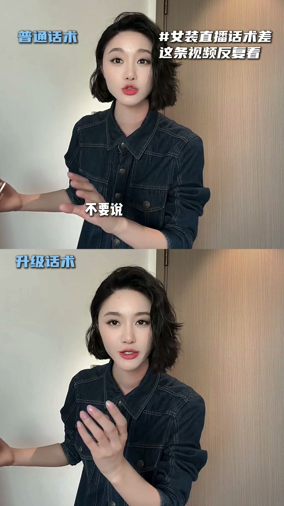
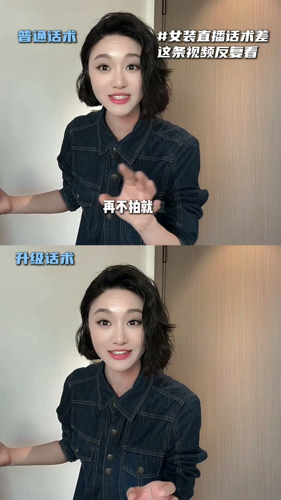
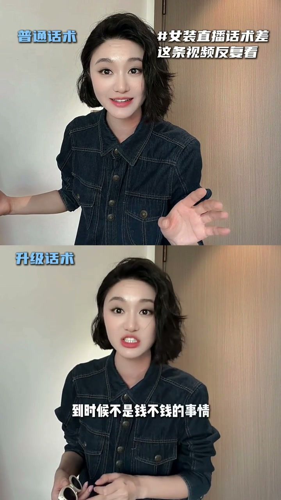
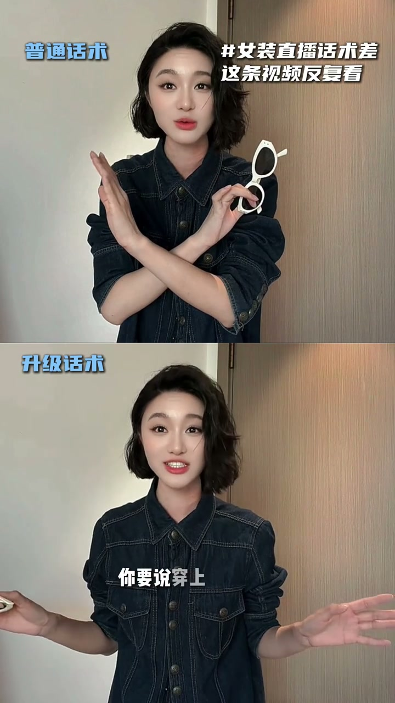
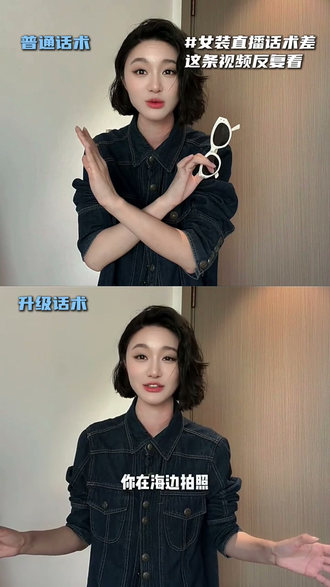

01
中文
不要说穿上它很高级。
EN
Don't say it just looks premium when you put it on.
表达提示looks premium（显高级）

Scene English · 直播技巧 · 女装话术
Struggling with Women's Fashion Live Sales Scripts? Watch This on Repeat
🎧 语音讲解
Talking Up the Premium Feel
情境同样的衣服，普通话术说「穿上很高级」，升级话术说「穿上有一种不露世俗的高级感」。区别在于把抽象的形容词变成有画面感的感受。语域：直播话术，对比示范。
不要说穿上它很高级。
Don't say it just looks premium when you put it on.
表达提示looks premium（显高级）
要说穿上它有一种不露世俗的高级感。
Say wearing it gives you an understated, refined elegance.
表达提示understated（不露世俗的）；refined elegance（高级感）
同样的淡妆，不同的效果。
The same light look, completely different results.
表达提示同样输入不同输出
不露世俗 → understated / effortlessly chic
高级感 → refined elegance / a premium feel

Scarcity Script: Creating Urgency
情境普通话术说「再不拍就没了」，升级话术把理由讲透：整场直播我就三十件，到时候不是钱的问题，是你有钱我没货。没提前付款肯定没有，先拍才有资格犹豫。语域：直播话术，紧迫感营造。
不要说再不拍就没了。
Don't just say it'll be gone if you don't buy now.
表达提示be gone（卖光/没了）
到时候不是钱不钱的事情，是你有钱我没有货。
At that point it's not about money — it's that you have money and I'm out of stock.
表达提示out of stock（没货）
如果你没有提前付款，肯定没有的。
If you haven't paid in advance, you're definitely not getting one.
表达提示pay in advance（提前付款）
制造紧迫 → create urgency / build a countdown feel
没货 → out of stock / sold out

The Moonlight-Belle Script: Paint a Picture
情境普通话术说「白色很温柔」，升级话术描述具体场景：穿上白色裙子就是白月光的感觉，你不会成为任何人的白月光，只会成为自己的白月光。海边、草原、森林拍照，阳光撒在身上，每次回想都美好。语域：直播话术，场景化销售。
你要说穿上这条白色裙子，就是白月光的感觉。
Say wearing this white dress gives you that moonlight-belle feeling.
表达提示moonlight-belle（白月光）
你只会成为自己的白月光。
You'll only ever be your own moonlight belle.
表达提示your own（自己的）
阳光撒在你身上，你每次回想起来都感觉那是如此的美好。
Sunlight falls on you, and every time you look back, it feels so beautiful.
表达提示look back（回想）
白月光 → moonlight-belle / a dreamlike white memory
回想 → look back / reminisce about

The Character Script: Identity Appeal
情境不要说白裙子穿上很酷，要说穿上它别人会觉得你是一个有风骨的人、一个不可冒犯的人，会对你多几分敬重。把卖衣服变成卖气质和身份认同。语域：直播话术，身份营销。
不要说这个白裙子穿上很酷。
Don't say the white dress just looks cool on you.
表达提示looks cool（很酷）
别人就会觉得你是一个很有风骨的人。
People will see you as someone with real backbone.
表达提示backbone（风骨）
这是一个不可冒犯的人，以及会对你多几分敬重。
Someone not to be crossed — and they'll respect you a little more.
表达提示not to be crossed（不可冒犯）；respect（敬重）
有风骨 → have real backbone / carry yourself with dignity
不可冒犯 → not to be crossed / not to be trifled with

Closing: The Blazer Sell
情境这个白裙子是很正很正的。男生有行政夹克，女生有这件行政西装，酷毙了。用「正」和「行政」把裙子拔高到正式场合的体面与气场。语域：直播话术，短促有力收尾。
这个白裙子是很正很正的。
This white dress is seriously sharp.
表达提示seriously sharp（很正）
男生有行政夹克，女生有这件行政西装。
Men have their power blazer — women have this one.
表达提示power blazer（行政西装）
酷毙了。
It's an absolute killer.
表达提示an absolute killer（酷毙了）
很正 → seriously sharp / impeccably structured
酷毙了 → an absolute killer / off the charts
把普通的形容词升级成画面感
制造稀缺感
把卖衣服变成卖身份
短促有力的收尾
「高级」用 premium / refined elegance，不是 tall class（中式英语）。
「卖光了」用 be gone / sold out，不是 be no。
「风骨」用 backbone（骨气），不是 air（空气）。
「行政西装」是 power blazer，不是 business jacket。